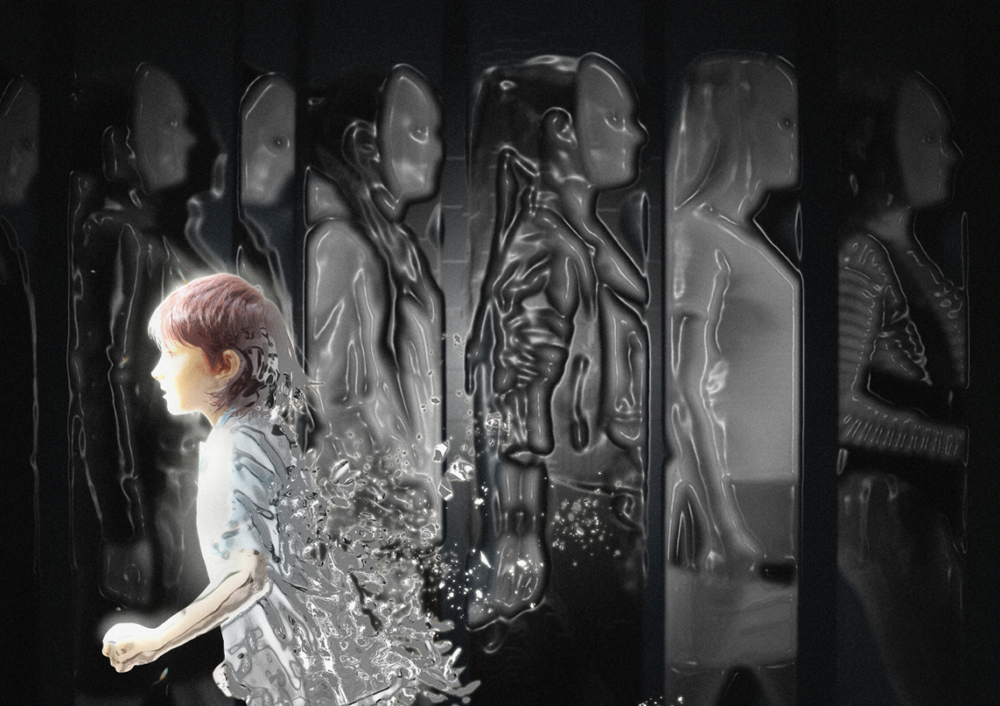

나이를 먹을수록 하기 싫거나 불편하더라도 어쩔 수 없이 해야 하는 행동이 존재한다. 사회화를 겪는 인간이라면 누구나 이런 사회적 규범을 나타내는 페르소나가 존재한다. 규범을 나타내는 페르소나가 있기에 개개인은 생활 속에서의 자신의 역할을 반영할 수 있으며 주변 세계와의 긍정적인 상호관계를 맺을 수 있다. 하지만 이러한 페르소나를 지속해서 과도하게 사용한다면 스트레스를 유발하기도 한다. 본 전시를 통해 이런 규범적 페르소나의 양면적 성질을 나타내 보고자 한다.
POSTER
PUNDTPERSONALNO. 1
concept
Peter Pan
법적으로 꼭 지켜야 할 사회 규범 외에도 종교적인 이유나 도덕적인 이유, 혹은 관습적으로 지켜져 온 행동들이 존재한다. 대부분의 규범은 안정적인 사회를 유지하기 위해 필수적이지만 아이보단 어른이 이런 행위 규율에 더욱 얽매이곤 한다. 아이에게 모범이 되는 사회적 인격을 지녀야 하기 때문일 수 있고 책임져야 할 것들이 많기 때문일 수도 있다. 하지만 고강도의 페르소나를 강요당하는 사회인들도 마음속에는 더욱 자유로운 형태의 페르소나를 가지고 있다는 보여주고자 한다.

INTERACTIONART
PUNDTPERSONALNO. 2
concept
시선(Eyes)
우리는 타인과의 교류와 사회적 상호작용을 통해 살아간다. 그 과정에서 스스로가 바라지 않더라도 타인의 압박에 의해 자기 생각과는 다른 행동을 취하기도 한다. 만약 누군가가 당신의 어떠한 행동을 빤히 쳐다본다면 그 순간 당신은 어떤 생각이 들겠는가? 나의 행동이 어딘가 이상한지, 잘못되었는지를 먼저 떠올릴 것이다. 그다음, 당신은 어떻게 행동하게 될까?
1. 돌아가는 아트갤러리의 형태를 띠고 있다.
2. 일정 거리 이상 가까워지면 그림이 바뀌며 작품 설명이 떠오른다.
3. 뒤로 물러서면 다시 아트 갤러리의 형태로 돌아가며 다시 다가가면 1-2의 상태가 된다.